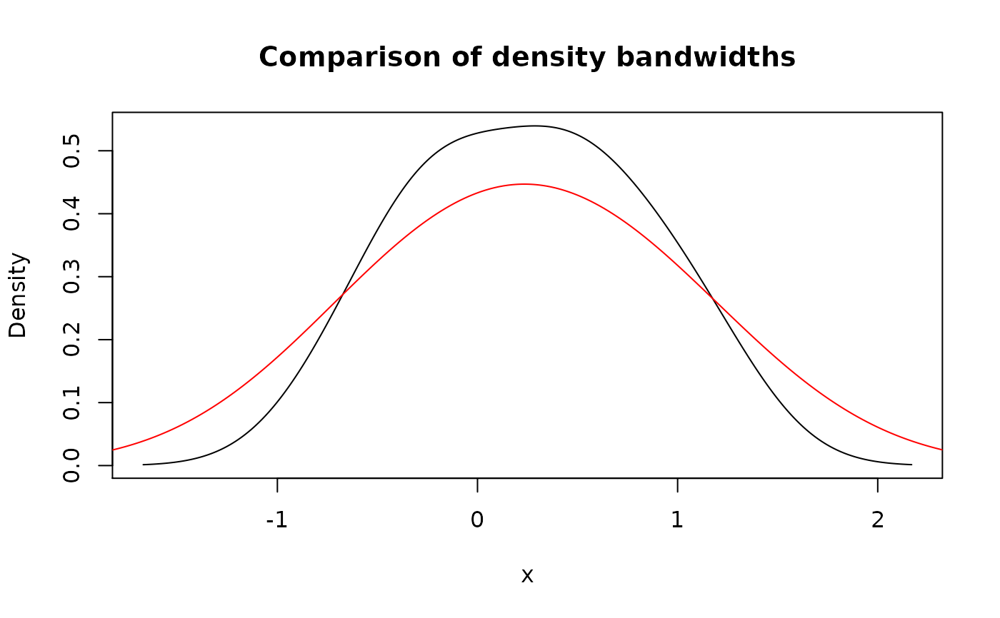

Functions for creating new pdqr-functions based on numeric sample or data frame describing distribution. They construct appropriate "x_tbl" metadata based on the input and then create pdqr-function (of corresponding pdqr class) defined by that "x_tbl".
new_p(x, type, ...)
new_d(x, type, ...)
new_q(x, type, ...)
new_r(x, type, ...)| x | Numeric vector or data frame with appropriate columns (see "Data frame input" section). |
|---|---|
| type | Type of pdqr-function. Should be one of "discrete" or "continuous". |
| ... | Extra arguments for density(). |
A pdqr-function of corresponding class ("p" for
new_p(), etc.) and type.
Data frame input x is treated as having enough information for
creating (including normalization of "y" column) an "x_tbl" metadata. For
more details see "Data frame input" section.
Numeric input is transformed into data frame which is then used as "x_tbl" metadata (for more details see "Numeric input" section):
If type is "discrete" then x is viewed as sample from distribution
that can produce only values from x. Input is tabulated and normalized to
form "x_tbl" metadata.
If type is "continuous" then:
If x has 1 element, output distribution represents a dirac-like
distribution which is an approximation to singular dirac distribution.
If x has more than 1 element, output distribution represents a
density estimation with density() treating x as
sample.
If x is a numeric vector, it is transformed into a data frame which is then
used as "x_tbl" metadata to create pdqr-function of
corresponding class.
First, all NaN, NA, and infinite values are removed with warnings. If
there are no elements left, error is thrown. Then data frame is created in
the way which depends on the type argument.
For "discrete" type elements of filtered x are:
Rounded to 10th digit to avoid numerical representation issues (see Note
in =='s help page).
Tabulated (all unique values are counted). Output data frame has three columns: "x" with unique values, "prob" with normalized (divided by sum) counts, "cumprob" with cumulative sum of "prob" column.
For "continuous" type output data frame has columns "x", "y", "cumprob".
Choice of algorithm depends on the number of x elements:
If x has 1 element, an "x_tbl" metadata describes dirac-like
"continuous" pdqr-function. It is implemented as triangular peak with center
at x's value and width of 2e-8 (see Examples). This is an approximation
of singular dirac distribution. Data frame has columns "x" with value
c(x-1e-8, x, x+1e-8), "y" with value c(0, 1e8, 0) normalized to have
total integral of "x"-"y" points of 1, "cumprob" c(0, 0.5, 1).
If x has more than 1 element, it serves as input to
density(x, ...) for density estimation (here arguments in
... of new_*() serve as extra arguments to density()). The output's "x"
element is used as "x" column in output data frame. Column "y" is taken as
"y" element of density() output, normalized so that piecewise-linear
function passing through "x"-"y" points has total integral of 1. Column
"cumprob" has cumulative probability of piecewise-linear d-function.
If x is a data frame, it should have numeric columns appropriate for
"x_tbl" metadata of input type: "x", "prob" for "discrete"
type and "x", "y" for "continuous" type ("cumprob" column will be computed
inside new_*()). To become an appropriate "x_tbl" metadata, input data
frame is ordered in increasing order of "x" column and then imputed in
the way which depends on the type argument.
For "discrete" type:
Values in column "x" are rounded to 10th digit to avoid numerical
representation issues (see Note in =='s help page).
If there are duplicate values in "x" column, they are "squashed" into one having sum of their probability in "prob" column.
Column "prob" is normalized by its sum to have total sum of 1.
Column "cumprob" is computed as cumulative sum of "prob" column.
For "continuous" type column "y" is normalized so that piecewise-linear function passing through "x"-"y" points has total integral of 1. Column "cumprob" has cumulative probability of piecewise-linear d-function.
set.seed(101)
x <- rnorm(10)
# Type "discrete": `x` values are directly tabulated
my_d_dis <- new_d(x, "discrete")
meta_x_tbl(my_d_dis)#> x prob cumprob
#> 1 -0.6749438 0.1 0.1
#> 2 -0.3260365 0.1 0.2
#> 3 -0.2232594 0.1 0.3
#> 4 -0.1127343 0.1 0.4
#> 5 0.2143595 0.1 0.5
#> 6 0.3107692 0.1 0.6
#> 7 0.5524619 0.1 0.7
#> 8 0.6187899 0.1 0.8
#> 9 0.9170283 0.1 0.9
#> 10 1.1739663 0.1 1.0plot(my_d_dis)
# Type "continuous": `x` serves as input to `density()`
my_d_con <- new_d(x, "continuous")
head(meta_x_tbl(my_d_con))#> x y cumprob
#> 1 -1.670523 0.001394314 0.000000e+00
#> 2 -1.663008 0.001491008 1.084133e-05
#> 3 -1.655493 0.001597622 2.244656e-05
#> 4 -1.647979 0.001708323 3.486833e-05
#> 5 -1.640464 0.001826333 4.814947e-05
#> 6 -1.632949 0.001952627 6.234855e-05plot(my_d_con)
# Data frame input
# Values in "prob" column will be normalized automatically
my_p_dis <- new_p(data.frame(x = 1:4, prob = 1:4), "discrete")
# As are values in "y" column
my_p_con <- new_p(data.frame(x = 1:3, y = c(0, 10, 0)), "continuous")
# Using bigger bandwidth in `density()`
my_d_con_2 <- new_d(x, "continuous", adjust = 2)
plot(my_d_con, main = "Comparison of density bandwidths")
# Dirac-like "continuous" pdqr-function is created if `x` is a single number
meta_x_tbl(new_d(1, "continuous"))#> x y cumprob
#> 1 1 0e+00 0.0
#> 2 1 1e+08 0.5
#> 3 1 0e+00 1.0